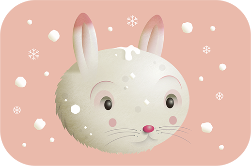
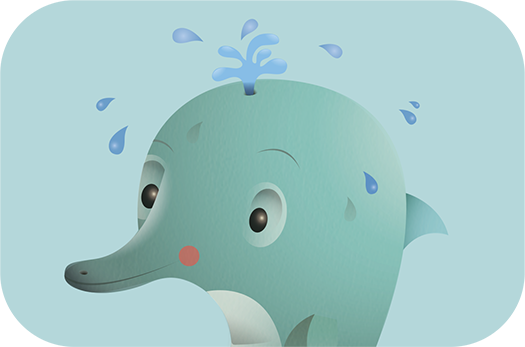
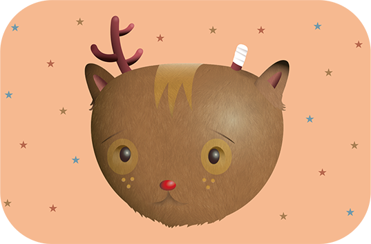

-

RABBITS
Don’t buy rabbit or any other animal leather. Leather alternatives can be found just about anywhere you might shop.
-

DOLPHINS
Don’t visit marine parks, aquariums or zoos. Keeping dolphins or any other animal in captivity is torture.
-

PIGS
The best way to help put an end to this cruelty is to switch to vegan foods.
-

GEESE
Choose cruelty-free materials to make sure that no goose or any other animal have been abused.
-

DEER
Educate others about hunting, encourage your legislators to enact or enforce wildlife-protection laws, and insist that nonhunters be equally represented on the staffs of wildlife agencies.
-

MICE
Support only companies and charities that do not test on mice. Look for cruelty free products to make sure that no animal has been abused in the making of the product.